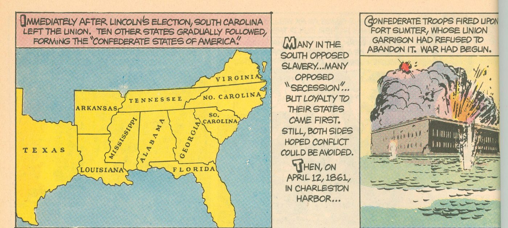

You're the fact-checker. For each part: read the comic on the left → get the check right → read the fact file → write 1–2 sentences. Done = all parts green, then turn in at the bottom.
Word help (tap to open)
- Confederacy = the 11 Southern states that left the U.S.
- Union = the United States (the North)
- Siege = surrounding a place until it gives up
- Total war = attacking everything the enemy needs to keep fighting
- Surrender = give up
- 1953 comic = made by the U.S. government to tell America's story in other countries. It shows one point of view.

Click the page to make it bigger.
Turn in your work
Your work saves on this device, so you can come back later. Your teacher sees it after you turn it in.
Comic: A Picture Story of the United States (1953), made for the United States Information Service, a U.S. government agency. Public domain. Scan: University of Nebraska–Lincoln Libraries, educational comics collection, via the Internet Archive.